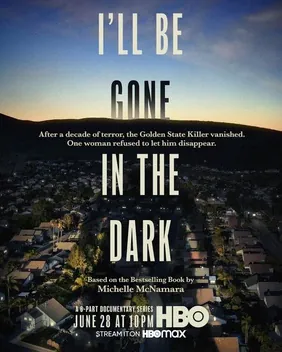

The genetics
Genetics appears here as a forensic tool, and the case shown is a real landmark. The Golden State Killer's crimes had been linked through DNA evidence since before 2000, but conventional database searches never produced a name. In 2018 investigators uploaded a DNA profile from a rape kit to GEDmatch, a public genealogy website, found distant relatives of the killer and, working with genetic genealogist Barbara Rae-Venter, built family trees until they reached DeAngelo; a sample taken covertly from his car door handle confirmed the match. The case brought worldwide attention to what is now called investigative genetic genealogy. The series presents it as the culmination of decades of work by detectives and by McNamara, who had suggested this approach. The case also raised privacy concerns, because the DNA of GEDmatch users was compared by police without their consent, and the website was later criticised for failing to protect its users' data.
The story
This six-part HBO documentary series, based on Michelle McNamara's book, follows the writer's obsessive investigation of an unidentified serial rapist and murderer who attacked people across California in the 1970s and 1980s, known as the East Area Rapist and the Original Night Stalker, and whom she named the Golden State Killer. Combining her writing, read by Amy Ryan, with interviews with detectives, survivors and relatives, it shows how McNamara worked through police archives with researcher Paul Haynes while hiding an addiction to opioids. She died of an accidental overdose before finishing the book, which was completed by her husband, Patton Oswalt, Haynes and the writer Billy Jensen. In 2018, investigator Paul Holes and genetic genealogist Barbara Rae-Venter traced the killer's family tree from DNA evidence, leading to the arrest of Joseph James DeAngelo, a 72-year-old former police officer. The final episodes cover his prosecution and the survivors' testimonies; a special episode followed in 2021.